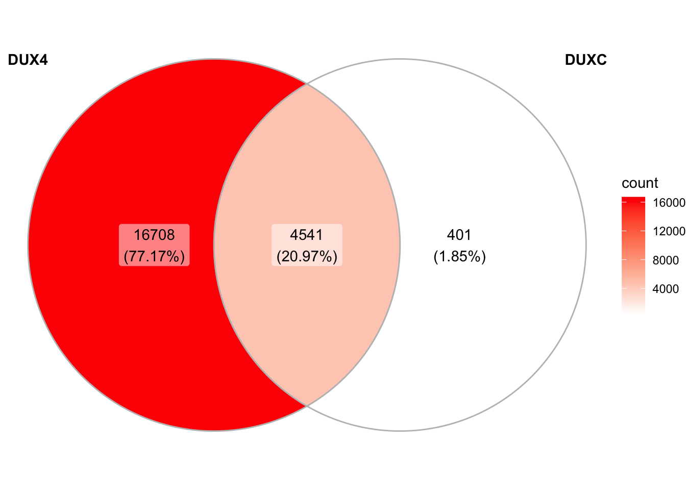
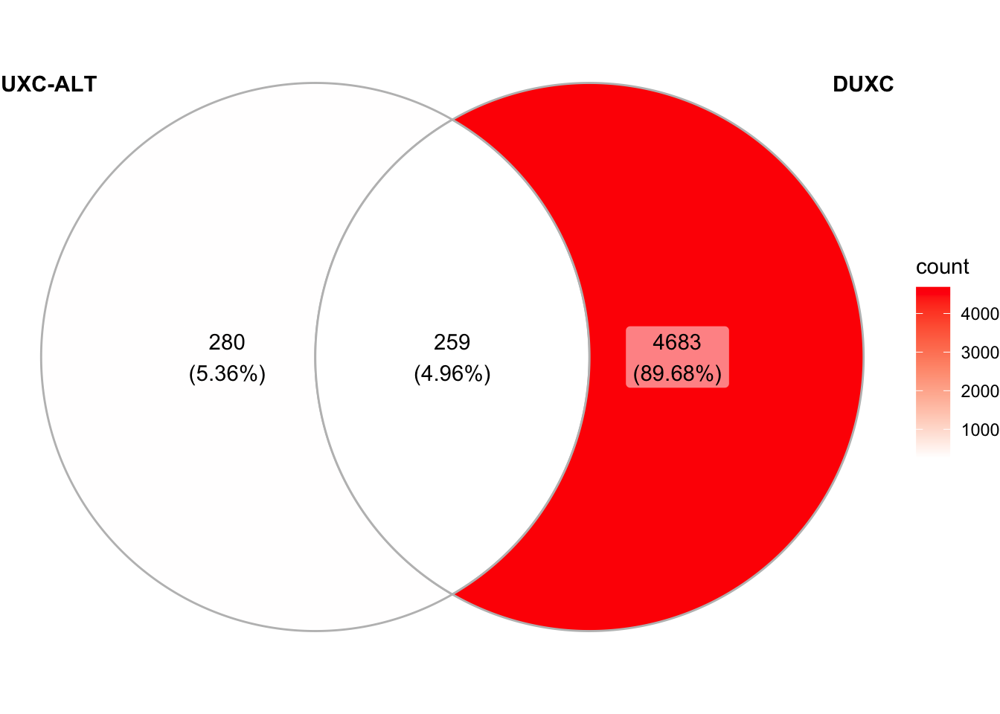

Chapter 1 ChIP-seq for the canine model
We performed ChIP-seq experiments to determind the transcription factor DUX4, DUXC and DUXC-ALT’s binding sites and motifs in the canine genome. DUX4 and DUXC were using monoclonal antiboy whereas DUXC-ALT using polyclonol Below we described the sample information and ChIP-seq preprocessing pipeline, peaks calling, and motifs discovery.
suppressPackageStartupMessages(library(TxDb.Cfamiliaris.UCSC.canFam3.ensGene))
txdb <- TxDb.Cfamiliaris.UCSC.canFam3.ensGene
suppressPackageStartupMessages(library(canFam3.rmsk))
suppressPackageStartupMessages(library(tidyverse))
suppressPackageStartupMessages(library(wesanderson))
suppressPackageStartupMessages(library(ggVennDiagram))
# eventially change to loading from github
pkg_dir <- "~/CompBio/canFam3.DuxFamily"
load(file.path(pkg_dir, "data", "peaks_list.rda")) # peaks list
load(file.path(pkg_dir, "data", "chipseq_si.rda")) # sample information1.1 ChIP-seq samples
## sample_name lib_size transcription_factor cell_type
## 1 Sample1_ImmCnMb_luc_poly 16561563 luciferas polyclonal
## 2 Sample4_ImmCnMb_CALTh_poly 17995356 DUXC-ALT polyclonal
## 3 Sample5_ImmCnMb_luc_mono 14149968 luciferas monoclonal
## 4 Sample6_ImmCnMb_hDUX4_mono 15326657 DUX4 monoclonal
## 5 Sample7_ImmCnMb_CCH_mono 15316644 DUXC monoclonal1.2 Analysis workflow
We used starndard pre-processing pipeline and MACS2 to call peaks
- Filter unqualified reads: based on casava filter, filtered out reads whose filter flag, indicated in the identifier, equals to “Y”.
- Trim adapter:
AGATCGGAAGAGCACACGTCAGAACTCCAGTCACGCACTAATCTCGTATG
- Quality control: quality control by fastqc to confirm that there is no more adapter contemination
- Alignement: align read to the canFam3 genome build by BWA-0.7.10 (
/scripts/do_bwa.sh) - Peak calling: peak calling made by macs2 (MACS2) with Luciferase monoclonal samples as negative controls; monoclonal cell line
Sample5_ImmCnMb_luc_monois used for monoclonal DUXC/DUX4 samples and the polyclonal cell lineSample1_ImmCnMb_luc_polyforSample4_ImmCnMb_CALTh_poly)
macs2 callpeak -t $sampleName.bam -c $cnt -f BAM \
--outdir $macsDir -g 2.42e9 -n $sampleName \
-B -q 0.01- Peak annotation: annotate peaks using Bioconductor ChIPseeker (Yu, Wang, and He 2015) package along with a customed
TxDb(TxDb.Cfamiliaris.UCSC.canFam3.ensGene) annotation package derived from the Ensembl’s gtf file in the canfam3 genome build.
- Motif discovery: prepare peaks FASTA files by selecting top 1000 peaks and flank up/downstream 50 bps around the peak summits (
/scripts/peaks.R); discovery motifs by using MEME 5.1.1 (/scripts/peaks.R)
meme Sample6_ImmCnMb_hDUX4_mono_peaksSeq_100.fa \
-dna -oc . -nostatus -time 18000 -mod zoops \
-nmotifs 3 -minw 6 -maxw 11 -objfun classic \
-revcomp -markov_order 01.3 Peaks and functional distribution
The peaks file is located at ../data/peaks_list.rda: It is a list of GRanges instances containing peaks coordinates, summits, q-values, annotaion, overlapping staus with repeat elements, and orthologs. For example:
## GRanges object with 6031 ranges and 24 metadata columns:
## seqnames ranges strand | length abs_summit pileup
## <Rle> <IRanges> <Rle> | <integer> <integer> <numeric>
## [1] chr1 285-544 * | 260 519 135
## [2] chr1 2696-3055 * | 360 2847 244
## [3] chr1 4078-4790 * | 713 4602 367
## [4] chr1 5785-6158 * | 374 6004 385
## [5] chr1 6764-7193 * | 430 6946 473
## ... ... ... ... . ... ... ...
## [6027] chrX 122767363-122767625 * | 263 122767497 12
## [6028] chrX 122902787-122903048 * | 262 122902820 13
## [6029] chrX 123168859-123169208 * | 350 123169031 14
## [6030] chrX 123213575-123213866 * | 292 123213776 13
## [6031] chrX 123686002-123686277 * | 276 123686087 13
## X.log10.pvalue. fold_enrichment X.log10.qvalue.
## <numeric> <numeric> <numeric>
## [1] 7.04597 1.60741 3.91784
## [2] 7.02327 1.4164 3.89587
## [3] 6.33763 1.30306 3.33661
## [4] 7.20888 1.32224 4.06735
## [5] 14.09717 1.45134 10.16508
## ... ... ... ...
## [6027] 9.90244 6.31739 6.41459
## [6028] 9.6226 5.93351 6.15395
## [6029] 9.94595 5.91592 6.45397
## [6030] 11.11847 6.86022 7.49343
## [6031] 7.43072 4.60644 4.26318
## name
## <character>
## [1] Sample7_ImmCnMb_CCH_mono_peak_1
## [2] Sample7_ImmCnMb_CCH_mono_peak_2
## [3] Sample7_ImmCnMb_CCH_mono_peak_3
## [4] Sample7_ImmCnMb_CCH_mono_peak_4
## [5] Sample7_ImmCnMb_CCH_mono_peak_5
## ... ...
## [6027] Sample7_ImmCnMb_CCH_mono_peak_6027
## [6028] Sample7_ImmCnMb_CCH_mono_peak_6028
## [6029] Sample7_ImmCnMb_CCH_mono_peak_6029
## [6030] Sample7_ImmCnMb_CCH_mono_peak_6030
## [6031] Sample7_ImmCnMb_CCH_mono_peak_6031
## annotation
## <character>
## [1] Distal Intergenic
## [2] Distal Intergenic
## [3] Distal Intergenic
## [4] Distal Intergenic
## [5] Distal Intergenic
## ... ...
## [6027] Intron (ENSCAFT00000044495.2/ENSCAFG00000019613.4, intron 1 of 6)
## [6028] Intron (ENSCAFT00000031203.3/ENSCAFG00000019631.3, intron 25 of 25)
## [6029] Intron (ENSCAFT00000031213.3/ENSCAFG00000019638.3, intron 6 of 15)
## [6030] Promoter (2-3kb)
## [6031] Distal Intergenic
## geneChr geneStart geneEnd geneLength geneStrand
## <character> <character> <character> <character> <character>
## [1] 1 270005 275409 5405 1
## [2] 1 270005 275409 5405 1
## [3] 1 270005 275409 5405 1
## [4] 1 270005 275409 5405 1
## [5] 1 270005 275409 5405 1
## ... ... ... ... ... ...
## [6027] 39 122556508 122779142 222635 2
## [6028] 39 122912936 122913286 351 1
## [6029] 39 123162497 123205171 42675 1
## [6030] 39 123211029 123230857 19829 1
## [6031] 39 123695785 123707849 12065 2
## geneId transcriptId distanceToTSS overlap.LTR
## <character> <character> <character> <logical>
## [1] ENSCAFG00000030108.1 ENSCAFT00000043967.1 -269461 FALSE
## [2] ENSCAFG00000030108.1 ENSCAFT00000043967.1 -266950 FALSE
## [3] ENSCAFG00000030108.1 ENSCAFT00000043967.1 -265215 FALSE
## [4] ENSCAFG00000030108.1 ENSCAFT00000043967.1 -263847 FALSE
## [5] ENSCAFG00000030108.1 ENSCAFT00000043967.1 -262812 FALSE
## ... ... ... ... ...
## [6027] ENSCAFG00000019613.4 ENSCAFT00000044495.2 11517 FALSE
## [6028] ENSCAFG00000031844.1 ENSCAFT00000037773.2 -9888 FALSE
## [6029] ENSCAFG00000019638.3 ENSCAFT00000031213.3 6362 FALSE
## [6030] ENSCAFG00000019639.3 ENSCAFT00000031215.3 2546 FALSE
## [6031] ENSCAFG00000033806.1 ENSCAFT00000054225.1 21572 FALSE
## repRange repName repClass repFamily
## <character> <character> <character> <character>
## [1] chr1:100-11597:- Bs Satellite Satellite
## [2] chr1:100-11597:- Bs Satellite Satellite
## [3] chr1:100-11597:- Bs Satellite Satellite
## [4] chr1:100-11597:- Bs Satellite Satellite
## [5] chr1:100-11597:- Bs Satellite Satellite
## ... ... ... ... ...
## [6027] chrX:122767214-122767812:+ L1_Canid_ LINE L1
## [6028] chrX:122902887-122903062:- L1MEd LINE L1
## [6029] chrX:123169121-123169286:+ SINEC_a1 SINE tRNA-Lys
## [6030] chrX:123213504-123213705:- L1M5 LINE L1
## [6031] chrX:123685809-123686326:- L1_Canis1 LINE L1
## external_gene_name hsapiens_homolog_associated_gene_name
## <character> <character>
## [1] AP002962.1
## [2] AP002962.1
## [3] AP002962.1
## [4] AP002962.1
## [5] AP002962.1
## ... ... ...
## [6027] GAB3 GAB3
## [6028] H2AFB1
## [6029]
## [6030] VBP1 VBP1
## [6031]
## mmusculus_homolog_associated_gene_name
## <character>
## [1]
## [2]
## [3]
## [4]
## [5]
## ... ...
## [6027] Gab3
## [6028] H2afb2
## [6029]
## [6030] Vbp1
## [6031]
## -------
## seqinfo: 40 sequences from an unspecified genome; no seqlengths1.3.1 Number of peaks
n_peaks <- t(map_dfr(peaks_list, length)) %>% as.data.frame() %>%
rownames_to_column(var="sample_name") %>%
dplyr::rename(num_peaks=V1) %>%
add_column(transcription_factor = c("DUX4", "DUXC", "DUXC_ALT",
"DUX4", "DUXC"))
n_peaks[c(5, 4, 3), ]## sample_name num_peaks transcription_factor
## 5 Sample7_ImmCnMb_CCH_mono 6031 DUXC
## 4 Sample6_ImmCnMb_hDUX4_mono 85825 DUX4
## 3 Sample4_ImmCnMb_CALTh_poly 561 DUXC_ALT1.3.2 Functional discribution
Visualization of the genomic annotation by peaks’ functional location.
.simplify_annotation <- function(peaks_gr) {
# Promoter, 5' UTR, Exon, Intron, 3' UTR, Distal Intergenic,
data.frame(detail = peaks_gr$annotation) %>%
add_column(simplify="unknown") %>%
dplyr::mutate(simplify = case_when(
grepl("Promoter", detail) ~ "Promoter",
grepl("5' UTR", detail) ~ "5' UTR",
grepl("Exon", detail) ~ "Exon",
grepl("Intron", detail) ~ "Intron",
grepl("3' UTR", detail) ~ "3' UTR",
grepl("Downstream", detail) ~ "Downstream",
grepl("Distal Intergenic", detail) ~ "Distal Intergenic")
) %>%
dplyr::mutate(simplify=factor(simplify, levels=c("Promoter", "5' UTR",
"Exon",
"Intron", "3' UTR",
"Downstream",
"Distal Intergenic")))
}CCH_df <- .simplify_annotation(peaks_list[["Sample7_ImmCnMb_CCH_mono"]]) %>%
count(simplify) %>%
dplyr::mutate(freq=n/sum(n), transcription_factor="DUXC")
hDUX4_df <- .simplify_annotation(peaks_list[["Sample6_ImmCnMb_hDUX4_mono"]]) %>%
count(simplify) %>%
dplyr::mutate(freq=n/sum(n), transcription_factor="DUX4")
CALTH_df <- .simplify_annotation(peaks_list[["Sample4_ImmCnMb_CALTh_poly"]]) %>%
count(simplify) %>%
dplyr::mutate(freq=n/sum(n), transcription_factor="DUXC-ALT")
df <- CCH_df %>% bind_rows(hDUX4_df) %>% bind_rows(CALTH_df) %>%
dplyr::mutate(transcription_factor=factor(transcription_factor,
levels=c("DUX4", "DUXC",
"DUXC-ALT"))) %>%
dplyr::mutate(percentage=freq * 100)
ggplot(df, aes(x=transcription_factor, y=percentage, fill=simplify)) +
geom_bar(stat="identity") +
theme_minimal() +
labs(y="Percentage (%)") +
theme(axis.title.x=element_blank(), legend.title = element_blank(),
axis.text.x = element_text(angle = 90, vjust = 0.5, hjust=1))+
scale_fill_manual(values = wes_palette("Darjeeling2", n=7,
type="continuous"))Figure 1.1: Functional distribution of peaks.
1.4 Overlap of peaks
1.4.1 DUXC and DUX4
genes= lapply(peaks_list[c(4, 5)], function(gr) gr$geneId)
names(genes) <- c("DUX4", "DUXC")
#vennplot(genes)
ggVennDiagram(genes)
1.4.2 DUXC and DUXC-ALT
genes= lapply(peaks_list[c(3, 5)], function(gr) gr$geneId)
names(genes) <- c("DUXC-ALT", "DUXC")
ggVennDiagram(genes)
1.5 Motifs analysis
Quesition: Do DUXC’s A or G peaks overlap with hDUX4 peaks? About 60% and 50% of A-peaks and G-peaks overlap with hDUX4 peaks, respectively.
Question: As for DUXC motif T(A/G)ATCCAATCA, does the position, A/G, associated with induced genes? No, neither A nor G motif is associated with induced genes.
# References
Yu, Guangchuang, Li-Gen Wang, and Qing-Yu He. 2015. “ChIPseeker: An R/Bioconductor Package for Chip Peak Annotation, Comparison and Visualization.” Bioinformatics 31 (14): 2382–3. https://doi.org/10.1093/bioinformatics/btv145.